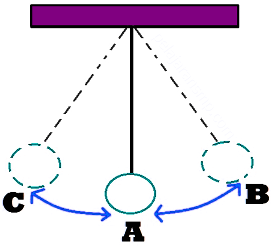
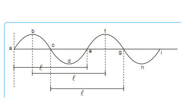

Apa itu Getaran ?
Getaran adalah suatu gerak bolak-balik di sekitar kesetimbangan.

Apa itu Gelombang ?
Gelombang adalah gerakan yang merambat.

Apa itu Hertz ?
Hertz adalah banyaknya gelombang dalam waktu 1 detik.
1 Hertz = 1 gelombang per detik.
Hertz merupakan SATUAN INTERNASIONAL (SI) untuk frekuensi.
Apa itu Periode ?
Periode adalah waktu yang dibutuhkan untuk menghasilkan 1x getaran gelombang.
1 Hertz = 1 gelombang per detik.
Hertz merupakan SATUAN INTERNASIONAL (SI) untuk frekuensi.
Hubungan periode dengan frekuensi ?
Periode adalah waktu yang dibutuhkan untuk menghasilkan 1x getaran gelombang.
Apa itu Ultrasonik ?
Ultrasonik merupakan sensor yang bekerja berdasarkan prinsip pantulan gelombang suara dan dapat digunakan untuk mendeteksi keberadaan suatu objek tertentu di depannya serta dapat mendeteksi jarak benda tersebut dari dirinya.
Frekuensi kerjanya pada daerah di atas gelombang suara, yaitu dari 40 kHz hingga 400 kHz.
Spesifikasi Sensor Ultrasonik HC-SR04 :
1. Jangkauan deteksi: 2cm sampai kisaran 400-500cm.
2. Sudut deteksi terbaik adalah 15 derajat.
3. Tegangan kerja 5V DC.
4. Resolusi 1 cm.
5. Frekuensi Ultrasonik 40 kHz.
6. Dapat dihubungkan langsung ke kaki mikrokontroler.